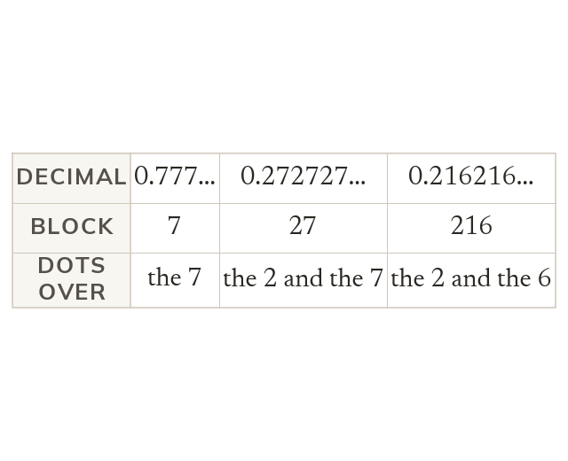

Dots mark the repeating block
A recurring decimal repeats a block for ever. Dots mark the block's first and last digits.
A recurring decimal repeats one block of digits for ever. A dot goes over the first digit and the last digit of the block.